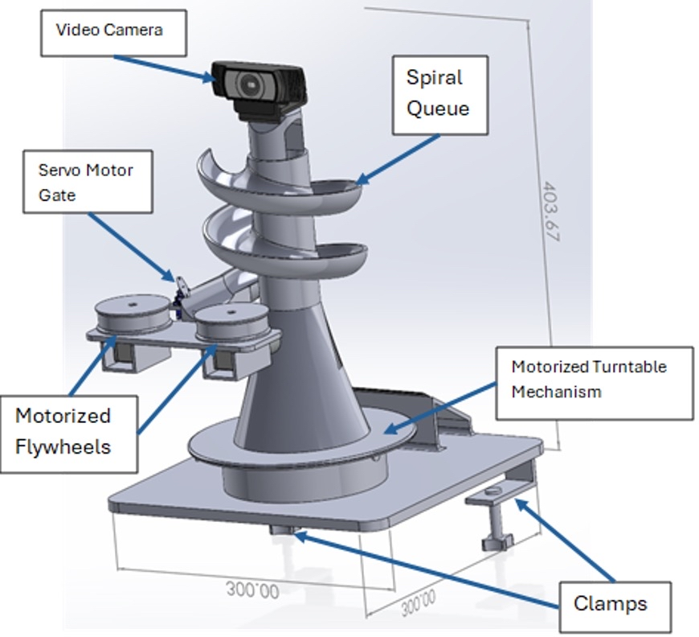
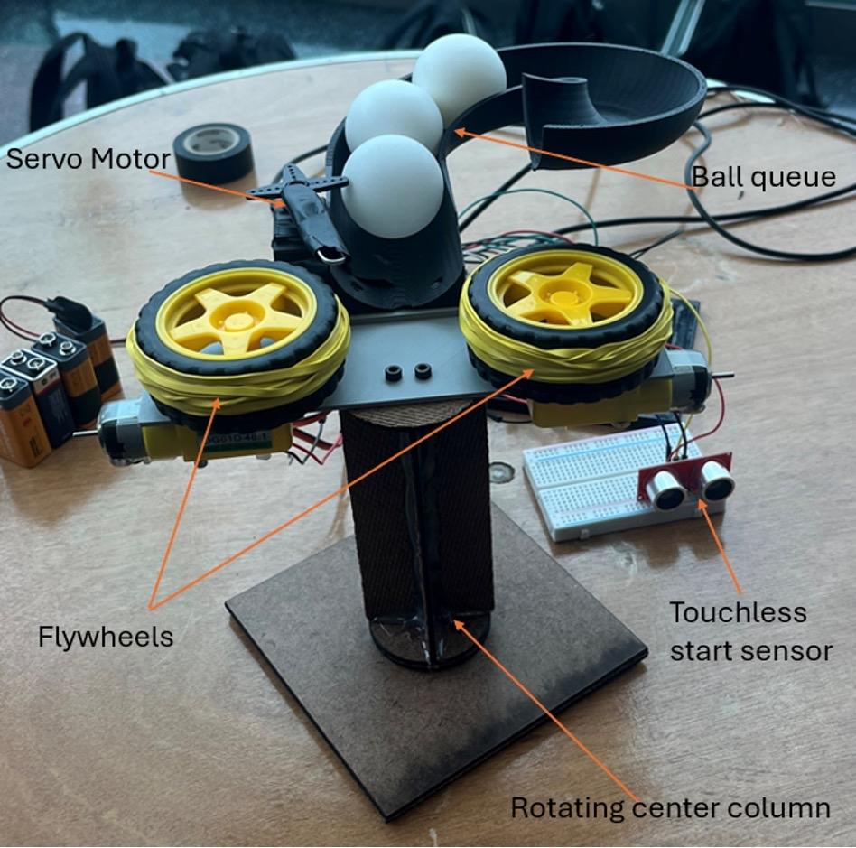
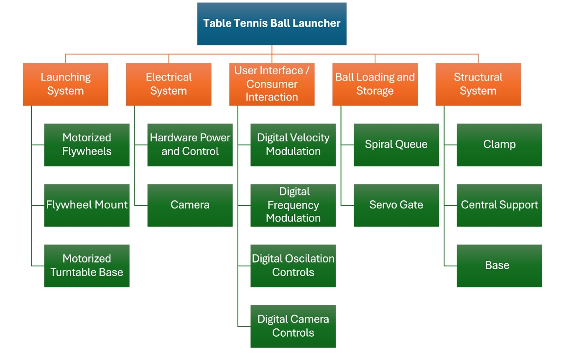

Table Tennis Ball Launcher
User-configurable mechanical system for repeatable and varied ball launches
Overview
This project involved the design and development of a table tennis ball launcher that combines repeatable launch performance with user-configurable features for practicing a wide range of shots. In addition to achieving consistent ball delivery, the system was designed with the end user in mind, enabling intuitive adjustment of launch speed and direction to simulate different training scenarios.
Mechanical Design
- Designed a dual-flywheel launching mechanism to achieve controllable and repeatable exit velocities
- Developed a rotational mechanism to adjust launch direction for varied shot placement
- Designed a ball feed system to ensure consistent engagement with the flywheels
- Modeled all components and assemblies using CAD prior to fabrication
Control & User Interface
- Implemented adjustable motor speed control to vary launch velocity
- Integrated directional control to allow users to modify launch angle
- Developed an intuitive user interface to enable quick configuration during operation
- Balanced ease of use with precise control to support repeatable training setups
Analysis & Validation
- Analyzed the relationship between flywheel speed and ball exit velocity
- Evaluated shot repeatability across multiple speed and direction settings
- Identified sources of variation related to feeding dynamics and contact mechanics
- Iteratively refined mechanical and control parameters based on test results
Project Planning & Execution
- Developed and maintained a Gantt chart to plan design, fabrication, and testing phases
- Allocated time and resources to ensure milestones were met on schedule
- Used structured planning to balance parallel mechanical, electrical, and software tasks
Visuals



Tools & Skills
Tools: SolidWorks, MATLAB, Arduino
Skills: Mechanical design, control systems, user-centered design, prototyping, project planning
My Role
I led the system-level design, mechanical modeling, and control implementation.I focused on balancing technical performance with usability, iteratively refining the launcher to support both consistent operation and flexible, user-driven configuration.